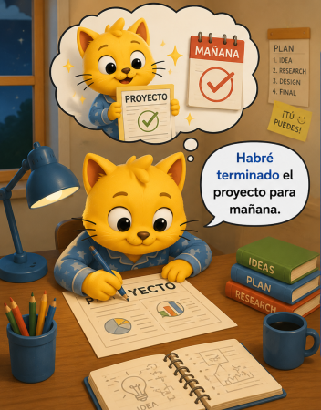

Se usa para hablar de acciones que estarán completadas en el futuro.
Ejemplo:
I will have finished the project by tomorrow.
"Habré terminado el proyecto para mañana."

Se usa cuando la acción es más importante que quien la realiza.
Ejemplo:
The book was written by Gabriel García Márquez.
"El libro fue escrito por Gabriel García Márquez."
Se usan para hablar de situaciones posibles o hipotéticas.
Ejemplo:
If I had money, I would travel the world.
"Si tuviera dinero, viajaría por el mundo."
Se usa para contar lo que otra persona dijo.
Ejemplo:
She said that she was tired.
"Ella dijo que estaba cansada."
Palabras más formales y precisas para comunicarse mejor.
Ejemplo:
However = "Sin embargo"
Therefore = "Por lo tanto"
Nevertheless = "No obstante"